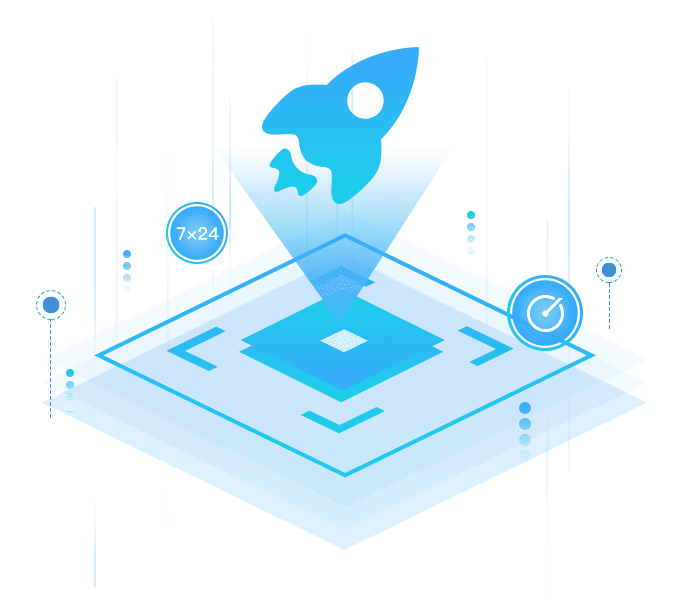
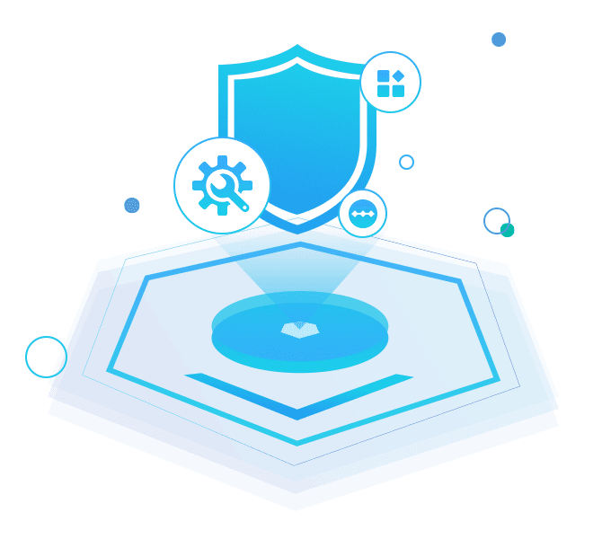
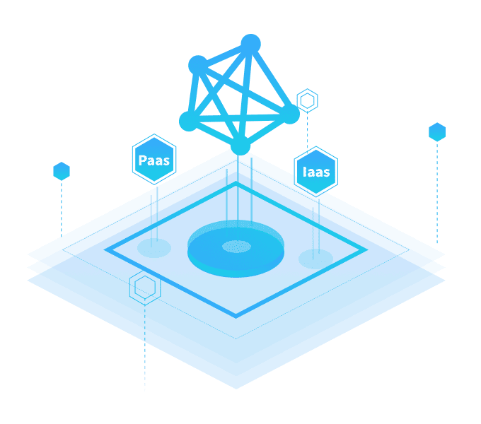
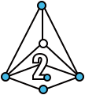
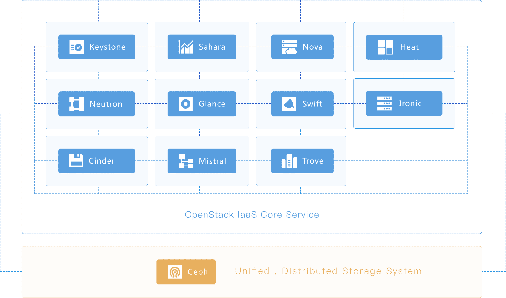

UOS Enterprise
- 网络
完全隔离的二层虚拟网络，路由器端口映射，支持防火墙，负载均衡等。
 云硬盘
云硬盘
稳定的I/O表现，客服业务尖峰，高性能、SLA 保证，秒级备份恢复。
 对象存储
对象存储
海量数据，弹性扩容，支持多种访问协议。
 云主机
云主机
秒级部署，在线迁移，VNC 管理，多 Hypervisor 支持。

高性能
优化云平台架构与核心组件，提供高性能云服务。

高可用
全平台 HA 方案，保障业务连续稳定。

高可扩展
计算资源，存储资源，网络资源轻松扩展。
解决客户一下痛点
迅速高效
使私有数据中心拥有大型公有云的能力，使您拥有7x24小时运维，分布式架构和高效与透明的上云体验。
超长维护
提供长期的支持和维护，持续修复社区潜在功能，性能缺陷，保障产品的稳定、可扩展性。
 完全开放
完全开放基于 OpenStack 社区 Newton 版本，100%与社区API兼容，避免厂商锁定。
完美整合
UOS Enterprise 不仅仅提供 IaaS 平台，还融合多种 PaaS 平台，解决客户业务层面的需求。
产品架构体系
